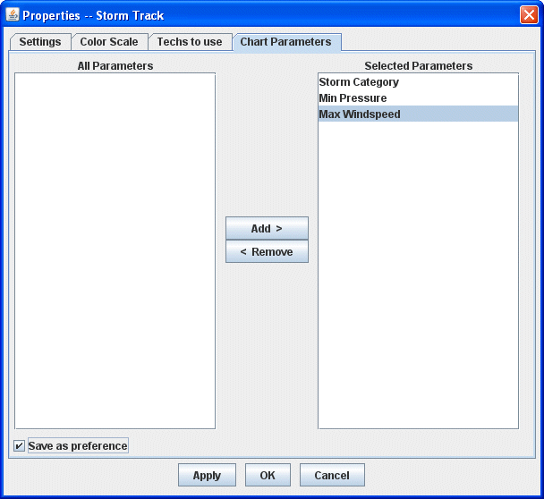

Overview
The Storm Track Properties Control is used to customize the user preference. First, bring up the Properties window (Edit->Properties menu), this window consists of four tabs. In the "Techs to use" tab, select all of the Techs in the "Use" list. Click and press control-a, and press Remove. Only select a number of Techs in the "Don't use" list and press Add. In the "Chart Parameters" tab, repeat the same step to select the desired parameters. If you want these selections to be saved in the system, please check the "Save as Preference" box.

